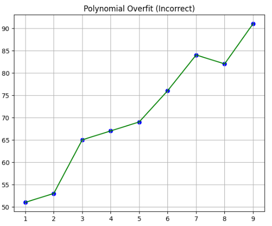
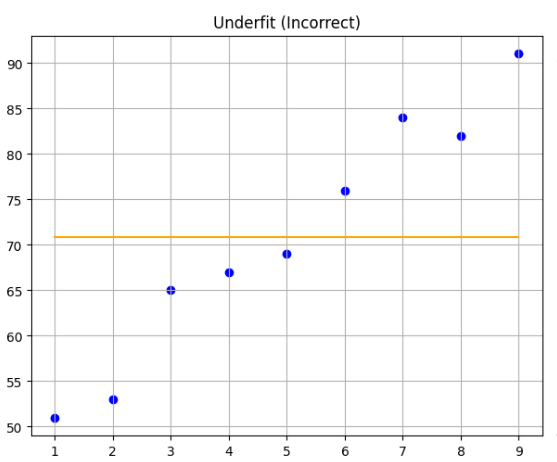
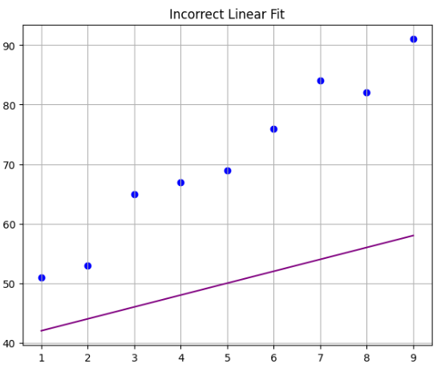
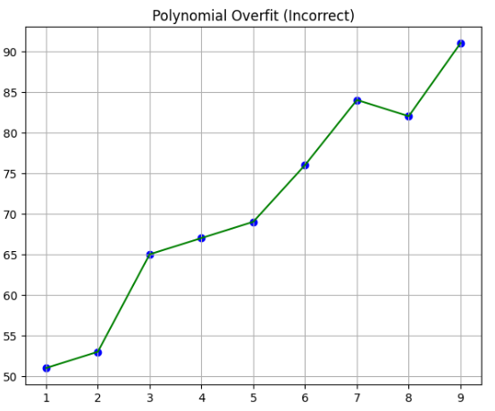
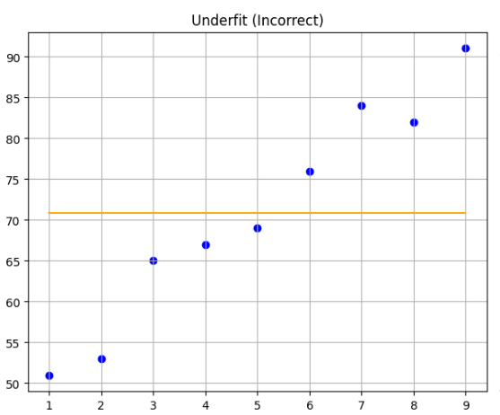
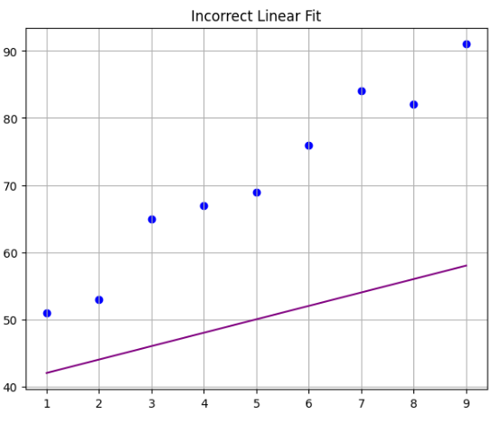

What is Machine Learning?
Have you ever wondered how companies are able to process so much data?
Imagine you want to conduct a survey to find out how many hours students study and their GPA, and suddenly you have 10M responses. How would you count so much data?
Would you ask 100 people for help? That wouldn't make sense in this day and age. This is where machine learning comes in.
Machine Learning (ML) is a type of Artificial Intelligence (AI) that gives computers the ability to learn from data without being explicitly programmed for each specific task.
In simpler terms, your computer will do the work for you. You won't have to count the 10M responses one by one, and you'll even be able to predict, for example, what grade I would get if I study 6 hours.
This sounds great, doesn't it? What used to require several people can now be done by one person.
Let's analyze the given example:
Instructions: Given 10M data points with hours studied and a grade, predict what I will get if I study 4 hours. Assume that all 10M people answered both fields, so there are no null values. There might be cases where data is incomplete or where Panchito put 90 for grade and Fulano put 9.0, but for simplicity, let's assume the data is uniform.
What should we do?
We know that the more you study, the better grades you get. It depends on the quality of study, but in general it works that way. So we know the data has an easy-to-find trend. To get a better reference, let's visualize the data on a plane, assuming for this case 10 data points, where hours studied are x and the grade is y.
Data Visualization
Now, after looking at the graph, it's clearer: a line forms that rises as it progresses. This can be summarized as: "if I study more hours, I'll get better grades."
Model Selection
As mentioned before, there are several machine learning models. Which one should we use?
"I want to know my grade if I study 6 hours." So, I know the study hours, but I don't know the grade; that's what I want to find out.
What type is grade? Is it a numerical value? Is it a continuous or discrete variable?
- Continuous variable: Includes numbers with decimal points.
- Discrete variable: Only whole numbers.
So, I know that grade is a numerical value and it's a discrete variable. The model that best fits my needs is: Linear Regression.
Linear Regression
The first model we're going to look at is linear regression. It's easier than it seems, if you understand the mathematical part first and then the algorithmic part.
What is Linear Regression?
Let's use the graph we saw earlier. If you notice, we can draw a line that fits the majority of the data points.
From the following graphs, mentally draw the line that best fits the data.
Find the Best-Fitting Line
 





Easy, isn't it? That's linear regression, nothing out of this world. The small problem is finding that line mathematically and then coding it.
There are several ways to do it, from numerical methods like gradient descent which involves derivatives and is more optimal for large data, to a very easy method called least squares which is pure algebra.
Linear Regression Formulas
What does each thing mean?
We have 3 formulas. I'm sure you already know what the first one is - that's right, it's the point-slope formula of a line. It's obvious, isn't it? We want to find a line. b is the slope, which makes the line rotate, so to speak. The direction the line points depends on the slope, and a is the y-intercept. With these parameters, we can draw infinite lines, and one of them must be ours.
We already know that with slope m and y-intercept a, we can have infinite lines, and one of them must be the one we're looking for.
If we look, we already have the formula for b and a, so we just need to do basic operations and voilà, we'll have our line that fits our data.
How would you start?
If you notice, for a, you need b. So you simply calculate b first, then a, and finally your line equation.
We know that x̄: is the mean of x, where x is a dataset.
For example, if we have 3,5,2,1 → the mean or average is (3+5+2+1)/4. Why 4? Because it's the number of elements in my dataset.
Linear Regression Example
Let's assume you have a list:
- x (hours studied) = [3,5,2,4,6,2]
- y (grade obtained) = [7,9,6,8,10,5]
To understand linear regression, we'll first work with small datasets. The first thing you need to calculate is b. To do this, we calculate the mean of x and y:
- x(mean) = (3+5+2+4+6+2)/6 = 22/6 ≈ 3.6667
- y(mean) = (7+9+6+8+10+5)/6 = 45/6 = 7.5
Step 2: Calculate the numerator
Then, for each value in list x, we subtract the mean and multiply it by the corresponding value in y minus the mean of y:
(3-3.6667)(7-7.5) + (5-3.6667)(9-7.5) + (2-3.6667)(6-7.5) + (4-3.6667)(8-7.5) + (6-3.6667)(10-7.5) + (2-3.6667)(5-7.5) ≈ 15
Step 3: Calculate the denominator
For each value in x, subtract the mean, square it, and sum them up:
(3-3.6667)² + (5-3.6667)² + (2-3.6667)² + (4-3.6667)² + (6-3.6667)² + (2-3.6667)² ≈ 13.3333
Step 4: Calculate the slope b
Divide the numerator by the denominator: b = 15 / 13.3333 ≈ 1.125
Step 5: Calculate the intercept a
a = y(mean) - b * x(mean) = 7.5 - (1.125 * 3.6667) ≈ 3.375
Step 6: Regression line equation
y = bx + a → y = 1.125x + 3.375
This is the optimal line that fits this data, and it allows us to predict the grade based on study hours.
Grade Prediction
Using the regression line equation we obtained:
y = 1.125x + 3.375
If we want to predict the grade for 6 hours of study:
y = 1.125 * 6 + 3.375 = 10.125 → approximately 10 points
Python Implementation:
Linear Regression Algorithm in Python
# Data
x = [3, 5, 2, 4, 6, 2] # Hours studied
y = [7, 9, 6, 8, 10, 5] # Grade obtained
# Function to calculate mean
def mean(lst):
return sum(lst) / len(lst)
# Calculate means
x_mean = mean(x)
y_mean = mean(y)
# Calculate numerator and denominator for b
numerator = sum((xi - x_mean) * (yi - y_mean) for xi, yi in zip(x, y))
denominator = sum((xi - x_mean)**2 for xi in x)
# Calculate slope b and intercept a
b = numerator / denominator
a = y_mean - b * x_mean
# Function to predict grade based on hours studied
def predict(hours):
return b * hours + a
# Prediction for 6 hours of study
predicted_grade = predict(6)
print(f"Prediction: {predicted_grade}")